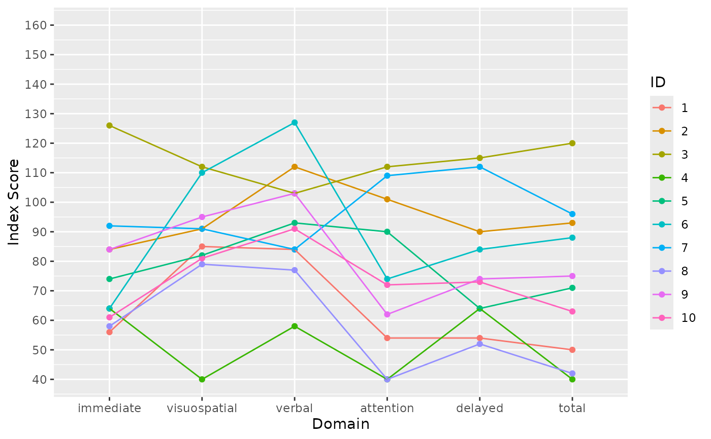

Plot index scores from five dimensional cognitive testing.
Includes option to facet.
Usage
index_plot(
ds,
id = "id",
sub_plot = "_is",
scores = c("_is", "_lo", "_up", "_per"),
dom_names = c("immediate", "visuospatial", "verbal", "attention", "delayed", "total"),
facet.by = NULL
)
Arguments
- ds
complete data frame
- id
colname of id column. Base for colouring
- sub_plot
main outcome scores variable to plot
- scores
variables to subset for plotting. Has to follow standard
naming (is to be changed)
- dom_names
domain names for axis naming
- facet.by
variable to base facet_grid on
Examples
index_plot(stRoke::score[score$event=="A",])
